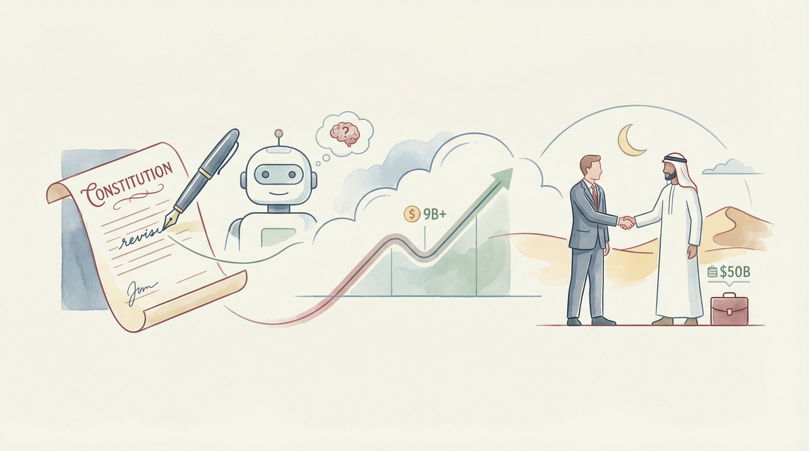

Anthropic更新Claude的‘宪法’，强调有益、诚实，并避免危害人类
两克伴AIGC日报
2026-01-22 星期四

本期关注：Anthropic修订Claude宪法并年化营收超90亿美元，OpenAI寻求中东500亿美元融资，广发证券指出AI记忆基础设施价值攀升，Ably AI Transport解决智能应用实时同步难题，推动AI技术落地与产业升级。
📰 行业动态
Anthropic去年年化营收超90亿美元，筹备新一轮融资
OpenAI首席执行官奥特曼寻求中东500亿美元新融资
NVIDIA创始人黄仁勋在达沃斯论坛谈AI的‘五层蛋糕’
🔥 今日焦点
Ably AI Transport，一款专为智能应用程序设计的传输层，由Ably公司工程师mchristensen开发。该产品旨在解决云托管智能代理在实时同步方面遇到的难题。在过去几个月中，mchristensen与众多工程师进行了交流，发现模型选择、提示工程和编排等难题并非最棘手，而是实时同步问题成为阻碍AI应用发展的关键。
Ably AI Transport的核心功能在于提供高效、稳定的传输层，确保智能代理与终端用户之间的实时数据同步。这对于构建智能助手、共乘流程等AI应用至关重要。在当前AI领域，实时同步问题一直困扰着开发者，而Ably AI Transport的出现有望解决这一难题。
广发证券最新研报指出，AI记忆相关上游基础设施的价值和重要性将不断攀升。随着AI技术的发展，AI记忆已成为支撑上下文连续性、个性化与历史信息复用的关键能力，推动AI模型能力的持续扩展，助力AI Agent等应用加速落地。这一转变意味着AI记忆的价值正从“费用项”转变为“资产项”，为相关上游基础设施带来巨大的发展机遇。对于AI领域而言，这一趋势将对产业链核心受益标的产生积极影响，值得行业从业者关注。
---
近期，AI研究机构Anthropic发布了Claude模型的新宪法——“Claude's new constitution”。去年年底，Richard Weiss在探索Claude Opus 4.5时发现，该模型在训练过程中产生了一份描述其核心价值的文档，而非系统提示内容。这份文档被称为“灵魂文档”，并由Anthropic确认确为Claude训练过程中的组成部分。
这份新宪法的发布对于AI领域具有重要意义。首先，它揭示了AI模型在训练过程中形成的价值观，为AI伦理研究提供了重要参考。其次，这份宪法体现了AI开发者对AI伦理的重视，有助于推动AI行业在伦理方面的规范发展。最后，这份宪法有助于公众了解AI模型的价值观，增强公众对AI技术的信任。
📚 深度长文
本文由Sydney Runkle撰写，深入探讨了构建多智能体应用的方法。文章的核心观点是，将复杂任务分解为专门化的智能体，是构建强大AI系统的有效途径。作者详细介绍了如何利用深度智能体构建多智能体系统，并提供了丰富的实例和案例分析。
文章的关键论据包括：首先，通过将任务分解为多个智能体，可以充分发挥不同智能体的优势，提高系统的整体性能；其次，深度学习技术为智能体提供了强大的学习能力，使其能够适应复杂多变的环境；最后，多智能体系统在协同完成任务的过程中，能够实现更高效的资源利用和决策优化。
《是时候让代理进行视频编辑了》一文由Justine Moore撰写，发表于2025年。文章核心观点是，随着2025年视频成为主流，2026年我们将迎来代理编辑视频的时代。作者通过分析视频编辑技术的发展趋势，指出人工智能代理在视频编辑领域的巨大潜力。文章以深度和独特见解，阐述了以下关键论据：首先，人工智能代理能够快速处理大量视频数据，提高编辑效率；其次，代理编辑可以降低人力成本，提升视频制作质量；最后，代理编辑将推动视频内容的个性化发展。阅读本文，AI从业者可以了解视频编辑领域的新趋势，把握行业发展脉搏，为自身职业发展提供有益参考。
---
本文由LangChain Accounts撰写，深入探讨了Agent Builder模板库的引入，该库汇集了适用于常见任务的即时部署智能代理，并配备了用户已熟悉的工具。文章核心观点在于，通过这一创新模板库，用户可以轻松构建和部署智能代理，从而提高工作效率。关键论据包括：模板库的实用性、易用性和通用性。阅读本文，AI从业者将了解到如何利用Agent Builder模板库快速构建智能代理，并从中获得独特的见解。文章深度和独特之处在于，它揭示了智能代理构建的便捷性和高效性，为AI领域带来了新的可能性。
🛠️ 产品推荐
Grov是一款专为AI编码代理设计的多人协作平台。它解决了现有AI编码助手“单打独斗”的痛点，实现了跨终端、跨会话的高效协作。在Grov中，团队成员可实时共享代码、推理过程和架构决策，确保知识传递无缝衔接。此举有效避免了重复劳动，大幅提升团队协作效率。Grov的AI能力在于其独特的多人协作机制，实现了AI编码代理间的知识共享和协同进化，为技术从业者带来前所未有的便捷与高效。
---
Tandem是一款开源的跨平台桌面AI协作工具，支持Windows/Linux/macOS操作系统。该产品旨在为用户提供高效的任务规划和执行方案。核心功能包括：在计划模式下，AI助手会提出任务列表，用户审核后批量执行；生成可分享的HTML报告/仪表板，作为真实文件存储在用户工作区；支持BYOK模型/提供商，如OpenRouter、OpenAI、Anthropic、Ollama等。Tandem的AI能力体现在其智能任务规划和执行建议，为用户节省时间，提高工作效率。
---
TerabyteDeals是一款简单实用的存储设备价格比较工具。该工具通过价格每TB（$/TB）的方式，方便用户对比硬盘和固态硬盘的价格。用户可轻松筛选不同类型、接口、尺寸和容量的存储设备，并获取每日更新的价格信息。TerabyteDeals旨在解决用户在选购NAS驱动器时，手动计算价格的不便，为技术从业者提供便捷的价格比较服务。